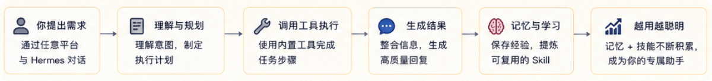

Hermes Agent の紹介
Hermes Agent は、Nous Research がオープンソース化した自己進化型AI Agentであり、継続的な学習、自己改善、クロスプラットフォームでの永続的な実行が可能です。
Hermes Agent は従来のチャットボットとは異なり、Hermes Agent は単に質問に答えるだけではありません。あなたの好みを記憶し、ワークフローを自動的に抽出し、セッションをまたいでコンテキストを保持し、複数のメッセージプラットフォームで同期して動作します。
- GitHub リポジトリ：https://github.com/nousresearch/hermes-agent
- Hermes Agent 公式サイト：https://hermes-agent.nousresearch.com/

Hermes Agent とは？
Hermes Agent は、Nous Research によって構築された自己進化型AI Agentフレームワークで、MITオープンソースライセンスを採用しています。
Hermes Agent の中心的な位置づけはチャットボットではなく、自律型Agent——バックグラウンドで継続的に動作し、能動的に学習し、クロスプラットフォームで動作するインテリジェントエージェントです。
公式の定義は非常に直接的です：
The agent that grows with you. 一个会随着使用不断成长的 Agent。それは自律型インテリジェントエージェントであり、動作時間が長いほど能力が向上します。
現在のほとんどのAIツールの課題：記憶喪失問題
AIツールを使ったことがある人なら誰でも経験があるでしょう——午後一杯かけてClaudeやChatGPTにプロジェクトの独自仕様を教え込み、非常に効率的なコラボレーションの後にチャットウィンドウを閉じる。
翌日新しいセッションを開くと、すべてが振り出しに戻っています。
これはAIツールの記憶喪失問題（The Amnesia Problem）と呼ばれます——能力はあるのに、記憶がない。
Hermes の解決策：学習ループを閉じる
Hermes は3つのコアメカニズムによって記憶喪失問題を解決し、絶えず自己強化する閉じたループを形成します：
任务执行
↓
提炼可复用技能（Skill）
↓
更新持久记忆（Memory）
↓
下次执行类似任务时自动加载
↓
持续改进 ……
- 1. 永続記憶（Persistent Memory）：3層記憶アーキテクチャ——作業記憶（現在のセッション）、意味的長期記憶（
memory.md）、エピソードログ（SQLite + 全文検索）。Agentは自分の記憶ファイルを能動的に整理・更新し、毎回手動でコンテキストを提供する必要はありません。 - 2. 自動スキル作成（Autonomous Skill Creation）：Agentが複雑なタスク（通常5ステップ以上のツール呼び出しを含む）を完了すると、このワークフローを自動的に再利用可能なSkillファイル（Markdown形式）に抽出します。次回類似したタスクに遭遇したときは、このSkillを直接読み込むだけで、試行錯誤を繰り返す必要はありません。
- 3. モデル非依存設計（Model-Agnostic）：Hermesは特定のモデルに縛られません。Nous Portal、OpenRouter（200以上のモデル）、OpenAI、Anthropic、またはローカルデプロイしたOllamaモデルに接続でき、コードを一切変更せずに1行のコマンドで切り替えられます。
簡単に言うと：チャットボットは質問に対して返答するだけですが、Hermes Agentは目標を与えられると自分で方法を考えて達成します。
他のAIツールとの比較
以下の表は、Hermes Agentと現在主流のAIツールを比較し、コア機能の違いを理解するのに役立ちます。
| 比較項目 | ChatGPT / Claude.ai | Claude Code / Cursor | Hermes Agent |
|---|---|---|---|
| セッション横断的な記憶 | 限定的/なし | 无 | ✅ 3層の永続記憶 |
| 自動学習スキル | ✗ | ✗ | ✅ Skillの自動抽出 |
| 実行方式 | クラウドSaaS | IDEプラグイン | ローカルで長期実行されるプロセス |
| マルチプラットフォーム対応 | Web/アプリ | IDE内 | Telegram/Slackなど15以上のプラットフォーム |
| データプライバシー | クラウドにアップロード | クラウドにアップロード | ✅ 100%ローカル |
| 定期自動化 | ✗ | ✗ | ✅ 内蔵Cronスケジューラ |
| モデル固定 | OpenAI/Anthropic | OpenAI/Anthropic | ✅ 任意のモデル |
| オープンソース | ✗ | 一部 | ✅ MIT License |
他のオープンソースAgentフレームワークとの違い
上記のエンドユーザー向けツールに加えて、オープンソースコミュニティには多くのAgentフレームワークがあり、Hermesはそれらとも本質的な違いがあります。
Hermes と AutoGPT / CrewAI の違い
AutoGPT、CrewAIなどのフレームワークはマルチステップタスクのオーケストレーションが得意ですが、それらは本質的にステートレス（状態を持たない）です——毎回ゼロから開始し、記憶の蓄積も、過去の経験からワークフローを抽出するメカニズムもありません。
Hermes の違いは時間次元にあります：現在のタスクを実行するだけでなく、実行過程で同期してますます強力な自己を構築していきます。
Hermes と OpenClaw の違い
OpenClaw は現在Hermesに最も近い競合製品であり、両者とも永続記憶とクロスプラットフォーム対応をサポートしています。
核心的な違いは：
- OpenClaw 以コントロールプレーン優先を設計理念とし、エコシステムの広さを重視、スキルは人間が作成・保守します。
- Hermes 以自己進化ループを中心とし、スキルはAgentが自律的に作成・改善し、学習の深さを重視します。
簡単に言うと：OpenClawはあなたが丁寧に調教したアシスタントであり、Hermesは自己成長する見習いです。
フレームワーク比較一覧
| 特徴 | Hermes Agent | AutoGPT | CrewAI | OpenClaw |
|---|---|---|---|---|
| 記憶システム | 3層アーキテクチャ（作業+意味+エピソード） | ベクトルデータベース | 内蔵記憶なし | 内蔵記憶なし |
| スキル抽出 | 自動抽出 + /learnコマンド | 无 | 无 | 无 |
| マルチプラットフォーム対応 | Telegram/Discord/Slack/WhatsApp/Signal | 无 | 无 | Telegram/Discord |
| デプロイモード | 6種類（CLI/Docker/Serverlessなど） | Docker | Pythonスクリプト | Docker |
| MCPサポート | ネイティブサポート | 限定的 | 限定的 | 限定的 |
| 定期タスク | 内蔵Cron + マネージドChronos | 无 | 无 | 内蔵なし |
| プラグインシステム | Middleware + Observer Hooks | 限定的 | 限定的 | 限定的 |
| オープンソースライセンス | MIT | MIT | MIT | MIT |
Hermes の3層アーキテクチャとは：Agentコア（意思決定と推論）→ Gateway（メッセージルーティングとプラットフォーム適応）→ Connector（プラットフォーム暗号化とアイデンティティ境界）。この階層化設計により、各層を独立して拡張・置換できます。
Hermes の核心理念
Hermes Agent の設計は1つの核心的な閉ループを中心としています：記憶 → スキル → タスク実行 → 自己改善。
この閉ループにより、Agentは使用過程で絶えず成長し、使えば使うほどあなたを理解するようになります。

記憶（Memory）
Hermes は3層記憶アーキテクチャを採用し、短期から長期まで異なる時間次元をカバーします。
作業記憶は現在のセッションのコンテキストを担当し、意味的長期記憶（memory.md）は重要な事実と好みを保存し、エピソードログ（SQLite + FTS5）はすべての過去の会話と操作を記録します。
Agentはセッションをまたいで過去の記憶を検索・呼び出しできるため、以前に伝えたことを忘れることはありません。
スキル（Skills）
スキルはHermesの最も中核的な特徴です——手続き的記憶の抽象化であり、Markdownファイルの形式で再利用可能なワークフローを駆動します。
エージェントが5ステップ以上のツール呼び出しを実行すると、このプロセスを自動的にスキルへと昇華できます。
また、以下の方法でも/learnコマンドを使用して、ドキュメント、APIドキュメント、または過去の会話からスキルを生成できます。
コミュニティはSkill Hub（agentskills.io）を通じてスキルを共有・インストールし、オープンなスキルエコシステムを構築しています。
タスク実行
Hermesは70以上の組み込みツールを備え、ファイルシステム、Webブラウジング、コード実行、画像認識、音声処理など28のツールセットをカバーしています。
MCP（Model Context Protocol）プロトコルを通じて、あらゆるサードパーティ製ツールサーバーに接続でき、エージェントの能力の境界を無限に拡張できます。
自己改善
15タスクごとに、HermesはPeriodic Nudgeメカニズムをトリガーし、自身の記憶とスキルを自動的に評価・最適化します。
Honchoユーザーモデリングシステムは弁証法的なユーザープロファイルを構築し、エージェントがセッションをまたいであなたへの深い理解を構築できるようにします。
コア機能
コア機能:- 接続（Connect）:Telegram、Discord、Slack、WhatsApp、Signal、Email、CLI——1つのエージェント、統一されたメモリ、すべてのプラットフォーム。Telegramで開始した会話を、ターミナルでシームレスに続行できます。
- 記憶（Remember）:Hermesはあなたのプロジェクトを学習し、スキルを自動生成し、解決した問題を決して忘れません。各セッションの終了後、重要な情報は永続メモリに書き込まれます。
- スケジュール（Schedule）:自然言語で定期タスクを設定——日報、バックアップ、定期レビュー、朝のブリーフィング——をバックグラウンドで無人実行できます。
- 委任（Delegate）:独立した会話コンテキスト、独立したターミナル、Python RPCスクリプトを持つ隔離されたサブエージェントを生成し、コンテキストコストゼロの並列パイプラインを実現します。
- 検索とマルチモーダル（Search）:Web検索、ブラウザ自動化、視覚理解、画像生成、テキスト読み上げ、マルチモデル推論がすべて組み込まれています。
Hermes Agentは任意の大規模モデルへの自由な切り替えをサポートしています。以下を含みます：Nous Portal、OpenRouter（200以上のモデル）、OpenAI、GLM、Kimi、MiniMaxなど。実行するとhermes model切り替えが可能で、コード変更不要、ベンダーロックインもありません。
| プロバイダー | 説明 | 設定方法 |
|---|---|---|
| Nous Portal | サブスクリプション型、ゼロ設定 | 以下でhermes modelOAuthログインを実行 |
| OpenAI Codex | ChatGPT OAuth、Codexモデルを使用 | 以下でhermes modelデバイスコード認証を実行 |
| Anthropic | 直接Claudeモデルを使用 | Claude Code認証またはAnthropic APIキーを使用 |
| OpenRouter | マルチプロバイダールーティング | APIキーを入力 |
| DeepSeek | DeepSeek APIへの直接アクセス | 設定DEEPSEEK_API_KEY |
| Hugging Face | 統合ルーターを介して20以上のオープンモデルにアクセス | 設定HF_TOKEN |
| カスタムエンドポイント | VLLM、SGLang、Ollama、または任意のOpenAI互換API | ベースURLとAPIキーを設定 |
| 特徴 | 機能の説明 |
|---|---|
| ネイティブターミナルインタラクション | 完全なTUIインターフェースで、複数行編集、コマンド補完、履歴遡及、ストリーミング出力などをサポート |
| 全プラットフォーム対応 | 1つのゲートウェイでCLI、Telegram、Discord、Slack、WhatsAppなどの複数端末に接続 |
| クローズドループ学習システム | メモリの自律管理、スキルの生成と最適化、セッション横断のリコール、ユーザーモデリング |
| 定期自動化 | 組み込みのCronスケジューラで、日報、バックアップ、監査などの7×24時間の自動タスクをサポート |
| 並列タスク処理 | サブエージェントの並列実行、複数ワークフローの分割、RPCツール呼び出しをサポート |
| マルチ環境実行 | ローカル、Docker、SSH、Daytona、Modalなど6種類のバックエンドをサポート |
| 研究レベルの機能 | 軌跡生成、強化学習環境、トレーニングデータ圧縮をサポート |
全体アーキテクチャ
全体フロー：

アーキテクチャ図：

| モジュール | 役割 | 例 |
|---|---|---|
| アクセス層（Clients） | ユーザーリクエストを受信 | Web、App、API、Feishu（飛書） |
| 入力層（Input） | さまざまな入力データを処理 | テキスト、画像、PDF、Excel |
| スケジューラ（Agent Orchestrator） | タスクを理解し、実行フローを分割 | 要件分析 → 計画策定 |
| 能力層（Capabilities） | 実行能力を提供 | 対話、検索、コード実行 |
| メモリ層（Memory） | コンテキストと履歴情報を保存 | セッションメモリ、長期メモリ |
| 知識層（Knowledge） | 知識検索機能を提供 | RAG、ベクトルデータベース |
| モデル層（Model Layer） | 推論能力を提供 | GPT、Claude、ローカルモデル |
| ツール層（Tools） | 外部ツールを呼び出してタスクを完了 | 検索、データベース、API |
| 外部サービス層（External Services） | 業務システムと連携 | ERP、CRM、クラウドサービス |
| インフラストラクチャ層（Infrastructure） | システムの稼働を支える | 権限、ログ、監視 |
適用シーン概要
Hermes Agentの応用範囲は非常に広く、以下は代表的な使用例です。
| シナリオ | 説明 | 代表的な構成 |
|---|---|---|
| 個人効率アシスタント | スケジュール管理、メール処理、情報整理、日常タスクの自動化 | デフォルトProfile + スケジュール/メールSkill |
| プログラミングアシスタント | コードレビュー、バグ修正、プロジェクトのスキャフォールド生成、ドキュメント作成 | コーディングProfile + コード関連Skill |
| リサーチエージェント | 文献検索、データ収集、情報整理、レポート生成 | リサーチProfile + 検索/分析Skill |
| 自動化運用保守 | サーバー監視、ログ分析、自動アラート、定期点検 | 運用Profile + Cron定期タスク |
| RLトレーニングデータ生成 | バッチ軌跡生成、ShareGPT形式でのエクスポート、Atroposとの統合 | batch_runner + トレーニングProfile |
| マルチプラットフォームカスタマーサポート | Telegram/Discord/Slackに統合接続し、よくある質問に自動返信 | Gatewayマルチプラットフォーム + FAQ Skill |
その他の拡張1つのHermes AgentインスタンスはProfileシステムを通じて複数の分身を作成でき、各分身はメモリ、スキル、ツールを独立して構成でき、互いに干渉しません。例えば、1つはコーディングアシスタント、1つはリサーチアシスタント、1つは運用監視として使用できます。
クリックしてノートを共有
<p style="font-size:14px;">ノートは本記事の内容を拡張したものである必要があります！</p><br> <p style="font-size:12px;"><a href="../tougao.html" target="_blank">記事投稿は、ここをクリックしてください</a></p> <p style="font-size:14px;"><a href="../w3cnote/runoob-user-test-intro.html" target="_blank">登録招待コードの取得方法</a></p> <h3 class="text-muted"><i class="fa fa-info-circle" aria-hidden="true"></i> ノートを共有する前に<a href=";.html" class="runoob-pop">ログイン</a>が必要です！</h3> <p><a href="../w3cnote/runoob-user-test-intro.html" target="_blank">登録招待コードの取得方法</a></p>